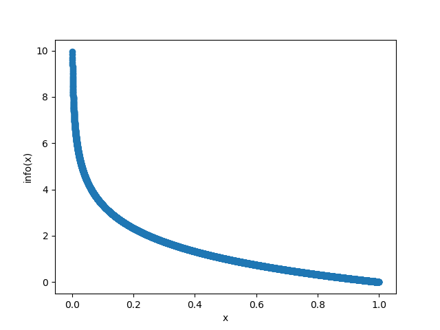
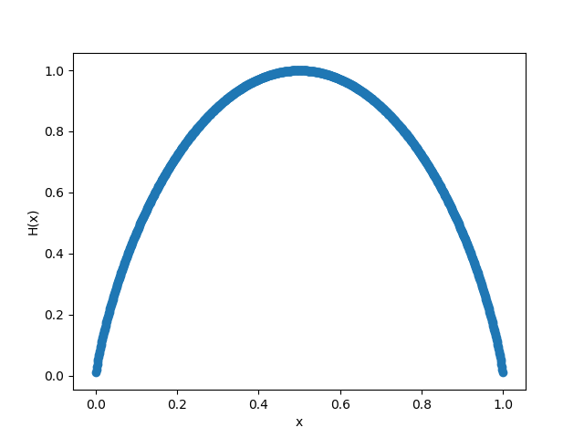
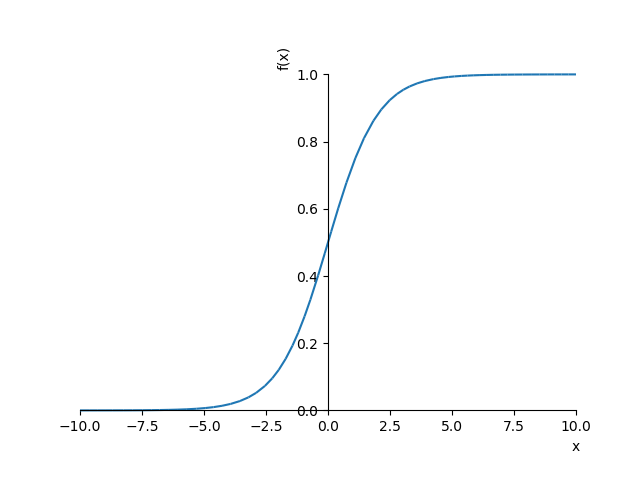
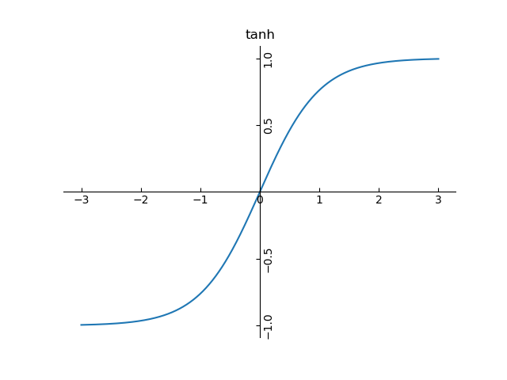
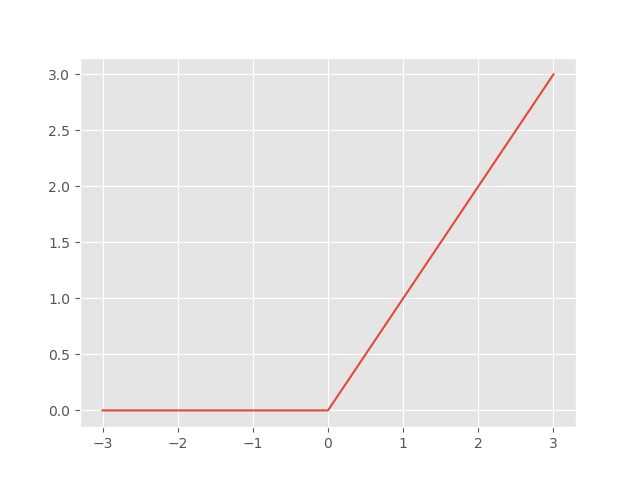

Table of Contents
- 1. DONE Taylor's formula(泰勒公式）
- 2. DONE Hessian Matrix
- 3. DONE 期望，方差，标准差，协方差
- 4. DONE 信息熵
- 5. DONE 贝叶斯条件概率
- 6. DONE 导数
- 7. DONE 高斯分布（正态分布）
- 8. sigmoid
- 9. tanh
- 10. ReLU
- 11. 卷积(convolution)
- 12. 拉格朗日乘数法
- 13. 对角矩阵
- 14. 单位矩阵
- 15. 初等变换
- 16. 逆矩阵
- 17. 正交矩阵
- 18. 特征值
- 19. 相似矩阵
- 20. 矩阵SVD分解
- 21. 泛函
- 22. Universal Approximation Theorem
- 23. Tensor
1 DONE Taylor's formula(泰勒公式）
泰勒公式是将一个在x=x0处具有n阶导数的函数f（x）利用关于\((x-x_0)\) 的n次多项式来逼近函数的方法。
其中\(R_n(x)\) 是\((x-x_0)^n\) 的高阶无穷小。
2 DONE Hessian Matrix
Hessian 是标量函数或标量场的二阶方阵。它描述多元函数的局部曲率。
2.1 二阶函数的Hessian Matrix
二元函数\(f(x_1,x_2)\) 在\(X^{(0)}\) 即\((x_1^{(0)},x_2^{(0)})\) 处的泰勒展开式为：
其中\(\Delta x_1 = x_1 - x_1^{(0)}\) , \(\Delta x_2 = x_2 - x_2^{(0)}\) .
将上式写成矩阵形式：
其中
2.2 多元函数的Hessian Matrix
3 DONE 期望，方差，标准差，协方差
3.1 期望(expected value):
期望常用字母\(\mu\) 来表示。
3.2 方差(deviation)
方差常用\(\sigma^2\) 来表示。
3.3 标准差
方差开方得到标准差\(\sigma\) 。
3.4 协方差(covariance)
协方差是衡量线性独立的无量纲的数。
4 DONE 信息熵
信息熵的概念很重要。
IT (information technology)从名字中也明白其重要性了，
在接触ai的过程中国呢，尤其感觉如是。
4.1 热力学的熵
熵，热力学中表征物质状态的参量之一，其物理意义是体系混乱程度的度量。
从微观角度看，\(S=kln\Omega\) ,其中\(\Omega\) 是微观状态数。
4.2 信息熵
信息熵是从热力学中熵的概念引出来的，用来度量确定事件所需的信息量。
信息熵越大，代表了越混乱。
信息熵的计算公式为：
其中，X表示随机变量，随机变量的取值为\((x_1, ..., x_n)\) , \(P(x_i)\) 表示事件\(x_i\) 发生的概率，且有\(\sum P(x_i)=1\) ，信息熵的单位为bit。
事件\(x_i\) 的信息量和它发生的概率有直接的关系，需要确定一件小概率事件，需要的大量的信息，
所以信息量函数应与事件概率成单调递减关系，同时两个独立事件\(x_i, x_j\) 满足：\[P(x_i,x_j) = P(x_i)P(x_j)\]
满足这两个条件的函数为：\[ -log_2P(x_i)\]
（取对数可以把累乘变为累加。）
所以信息量函数为：\[info(x_i) = -log_2P(x_i)\]
信息熵为信息量的期望。
信息量函数曲线图如下：

从图中可以看出，概率越小，确定其发生的信息量越大，或者说，如果小概率事件发生了，则其会携带大量信息。
假设事件X，\(P(x_1)\) 为事件\(x_1\) 发生的概率，\(P(x_2)\) 为事件\(x_2\) 发生的概率，其中，\(P(x_1) + P(x_2) = 1\) ,
当\(P(x_i)\) 取不同的值时，信息熵曲线如下：

从图中可以看出，当\(P(x_1)\) 的概率为0.5时，这个时候信息熵最大，混乱程度最大，
同时，如果需bit来存储时，需要的bit也越多。
4.3 高斯分布是最大熵分布
5 DONE 贝叶斯条件概率
bayes公式：
用来描述两个条件概率之间的关系。
即当你无法判断一个事物的的本质的时候，可以依靠与该事物相关的事件来判断该事物本质属性的概率。
用数学表达就是：支持某项属性的事件发生的越多，则该属性成立的可能性就越大。
bayes公式的变体：
多特征值的变体：（符号无关性质得出）
6 DONE 导数
6.1 常数和基本初等函数的求导公式
常数和幂函数：
三角函数：
指数函数：
对数函数：
反三角函数：
6.2 和差积商的求导法则
设\(u = u(x), v=v(x)\) 都可导，则
6.3 反函数求导法则
设\(x=f(x)\) 在区间\(I_y\) 内单调、可导切\(f'(y)\ne 0\) ，则它的反函数\(y=f^{-1}(x)\) 在\(I_x =f(I_y)\) 内可导，且
6.4 复合函数求导法则
设\(y=f(u)\) ，且\(u=g(x)\) 且\(f(u)\) 及\(g(x)\) 都可导，则复合函数\(y=f[g(x)]\) 的导数为
7 DONE 高斯分布（正态分布）
高斯分布：
\[
\frac{1}{\sqrt{2\pi\sigma^{2}}}exp({-\frac{(x-\mu)^2}{2\sigma^2}})
\]
其中，\(\mu\) 为均值， \(\sigma\) 为标准差。
8 sigmoid
在信息科学中，由于其单增以及反函数单增等性质，Sigmoid函数常被用作神经网络的阈值函数，将变量映射到0,1之间。
其对x的导数可用自身表示：

9 tanh

10 ReLU
rectified linear unit

11 卷积(convolution)
卷积是一种算子，类比加法算子，减法算子等，代表了特定的运算。
卷积是两个函数的运算表示，运算规则为（假设连续）：
假设有函数f(x)和g(x)，都可积分，则
理解：
\(g(x=\tau)\) 可以看作函数的对称与平移，其意义为，将g反转后从\(-\infty\) 到\(+\infty\) 平移，对交集的积分。

12 拉格朗日乘数法
要求函数\(z=f(x,y)\) 在附加条件\(\varphi(x,y) = 0\) 下的可能极值点，
可以先作拉格朗日函数
其中 \(\lambda\) 为参数。求其对x与y的一阶偏导数，并使之为零，
然后与条件联立起来：
由这方程组解出\(x,y,\lambda\) ，这样得到的 \((x,y)\) 就是函数 \(f(x,y)\) 在附加条件
\(\varphi(x,y)=0\) 下的可能极值点。
13 对角矩阵
也记作 \(\Lambda = \mathrm{diag}(\lambda_1,\lambda_2,\cdots,\lambda_n)\) .
14 单位矩阵
15 初等变换
以下三种成为初等行变换：
- 对换两行
- 以数 \(k\ne 0\) 乘某一行的所有元
- 把某一行所有元的k倍加到另一行对应元上
对应可得初等列变换，初等行变换和初等列变换，统称初等变换。
如果矩阵A经有限次初等行变换变成矩阵B，称矩阵A与矩阵B行等价，记作 \(A\stackrel{r}{\sim}B\) ；
如果矩阵A经有限次初等列变换变成矩阵B，称矩阵A与矩阵B列等价，记作 \(A\stackrel{c}{\sim}B\) ；
如果矩阵A经有限次初等变换变成矩阵B，称矩阵A与矩阵B等价，记作 \(A\sim B\) .
定理：设A与B为\(m\times n\) 矩阵，那么
- \(A\stackrel{r}{\sim}B\) 的充要条件是存在m阶可逆矩阵P，使 \(PA = B\) ;
- \(A\stackrel{c}{\sim}B\) 的充要条件是存在n阶可逆矩阵P，使 \(AQ = B\) ;
- \(A\sim B\) 的充要条件是存在m阶可逆矩阵P及n阶可逆矩阵Q，使 \(PAQ = B\) .
方阵A可逆的充要条件是 \(A\sim E\) .
16 逆矩阵
对于n阶矩阵A，如果有一个n阶矩阵B，使
\[AB=BA=E\]
则说矩阵A是可逆的，把B称为A的逆矩阵。
A的逆矩阵记作 \(A^{-1}\) .
定理1: 若矩阵A可逆，则 \(|A| \ne 0\) .
定理2: 若 \(|A| \ne 0\) , 则A可逆，且 \[A^{-1} = \frac{1}{|A|}A^{\ast}\] 其中\(A^{\ast}\) 为矩阵A的伴随矩阵。
17 正交矩阵
如果n阶矩阵A满足
\[
A^TA=E \quad(i.e. \ A^{-1} = A^T)
\]
那么称A为正交矩阵。
若P为正交矩阵，则线性变换 \(y=Px\) 称为正交变换。
（经正交变换，线段程度保持不变）
18 特征值
设A是n阶矩阵，如果数 \(\lambda\) 和n维非零列向量x使关系式
成立，那么这样的数 \(\lambda\) 称为矩阵A的特征值，非零向量x称为A的对应于特征值 \(\lambda\) 的特征向量。
\((\ref{eigen})\) 式也可写成
它有非零解的充要条件是
即
设矩阵 \(A=(a_{ij})\) 的特征值为 \(\lambda_1 , \lambda_2 , \cdots, \lambda_n\) ，则
- \(\lambda_1 + \lambda_2 + \cdots + \lambda_n = a_{11} + a_{22} + \cdots + a_{nn}\)
- \(\lambda_1 \lambda_2 \cdots \lambda_n = |A|\)
定理：设\(\lambda_1,\lambda_2,\cdots,\lambda_m\) 是方阵A的m个特征值，\(p_1,p_2,\cdots,p_m\) 依次是与之对应
的特征向量，如果\(\lambda_1,\lambda_2,\cdots,\lambda_m\) 各不相同，则$p_1,p_2,⋯,p_m$线性无关。
18.1 理解
\((\ref{eigen})\) 式中，将x看作n维空间的一个基，A看作变换矩阵，
则其含义为：在变换矩阵作用下，x变换为映射空间中的\(\lambda x\) ，
即进行了缩放变换。
如果将所有特征向量作为基，则组成特征空间。
如果将数据映射到特征空间，能从另一方面反应数据的分布信息。
比如，如果特征值有相同的，则在特征空间中，某个基上是无复杂数据分布规律的。
18.2 特征分解
设A有n个不同的特征值，于是有
对上式进行简化
其中
19 相似矩阵
设A、B都是n阶矩阵，若存在可逆矩阵P，使
则称B是A的相似矩阵，或说矩阵A与B相似。对A进行运算 \(P^{-1}AP\) 称为对A进行相似变换。
定理：若n阶矩阵A与B相似，则A与B的特征多项式相同，从而A与B的特征值相同。
推论：若n阶矩阵A与对角矩阵相似，则对角线上的n个值即A的n个特征值。
20 矩阵SVD分解
SVD: singualr value decomposition
假设A是一个m*n的矩阵，那么U是一个m*m的矩阵，D是一个m*n的矩阵，V是一个n*n的矩阵。
矩阵U和V都是正交矩阵，D是对角矩阵。
对角矩阵D的对角线上的元素被称为A的奇异值。
矩阵U的列向量被称为左奇异向量，矩阵V的列向量被称为右奇异向量。
A的左奇异向量是\(AA^T\) 的特征向量；
A的右奇异向量是\(A^TA\) 的特征向量；
A的非零特征值是\(A^TA\) 的特征值的平方根，也是\(AA^T\) 特征值的平方根。
21 泛函
函数到实数的映射。
22 Universal Approximation Theorem
A feed-forward network with a single hidden layer containing a finite number of neurons can
approximate continuous functions on compact subsets of \(R^n\) , under mild assumptions on the activation function.
Let \(\varphi\) : R \(\rightarrow\) R be a nonconstant, bounded, and continous functions.
Let \(I_m\) denote the m-dimensional unit hypercube \([0,1]^m\) .
The space of real-value continous function on \(I_m\) is denoted by \(C(I_m)\) .
Then, given any \(\varepsilon > 0\) and function \(f \in C(I_m)\) ,
there exist an integer N, real constants \(\upsilon_i, b_i \in R\) and real vectors \(\omega_i \in R^m\) for \(i = 1, \cdots, N\) , such that we may define:
as an approximate realization of the function f; that is
for all \(x \in I_m\) .
In other words, functions of the form \(F(x)\) are dense in \(C(I_m)\) .
This still holds when replacing \(I_m\) with any compact subset of \(R^m\) .
Kurt Hornik showed in 1991 that it is not the specific choice of the activation function, but rather the multilayer feedforward architecture itself which gives neural networks the potential of being universal approximators. The output units are always assumed to be linear. For notational convenience, only the single output case will be shown. The general case can easily be deduced from the single output case.
In 2017 Lu et al. proved universal approximation theorem for width-bounded deep neural networks.
23 Tensor
In mathematics, a tensor is a geometric object that maps in a multi-linear manner geometric vectors, scalars, and other tensors to a resulting tensor.
Vectors and scalars are considered as the simplest tensors.